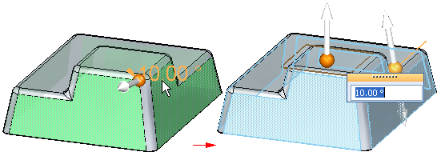
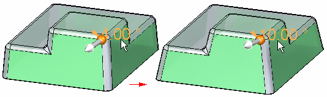
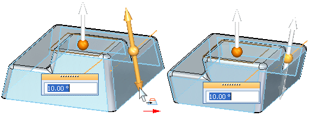
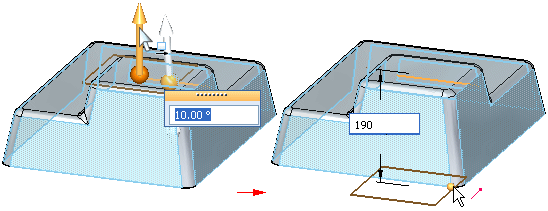

Editing add draft features
There are a variety of editing handles you can use for editing add draft features. You can use the editing handles to edit the draft properties of the entire feature, or one or more drafted faces you select.

You can use the editing handles to make the following types of edits:
-
Change the draft angle.
-
Change the draft direction.
-
Change the draft plane.
Editing the entire feature
To edit the properties of the entire add draft feature, select the feature in PathFinder, or position the cursor over a drafted face, and then use QuickPick to select the add draft feature.
Editing individual drafted faces
To edit one or more existing drafted faces, select the faces you want to edit in the graphics window. If you change the draft direction for the face, a new add draft feature is added to PathFinder for the faces you edited.
Examples
You can use the editing handles to make the following types of edits:
-
Use the edit definition handle to change the draft angle.

-
Use the flip direction handle to flip the draft direction.

-
Use the plane positioning handle to reposition the draft plane, parallel to its original position.

Draft features which cannot be deleted or edited
Some draft features cannot be deleted or edited using the draft editing handles:
-
Draft features constructed using the Parting Line option
-
Draft features constructed using the Parting Surface option
For these types of draft features, a special symbol is displayed adjacent to the draft feature in PathFinder to indicate that the draft feature cannot be deleted or edited. When you position the cursor over the draft feature in PathFinder, a tooltip is displayed to indicate that the feature cannot be edited or deleted.
To edit the draft feature, you can use the Add Draft command to redraft the faces, or you can use the steering wheel handle to move or rotate the faces directly.
How do I
Add a draft angle to a partExamples: Constructing drafts to different sides
Examples: Selecting draft faces with the chain method
Examples: Selecting draft faces with the loop sides method
Learn more
Adding draft to partsWorkflow overview
Defining the draft plane
Using parting geometry
Split draft
Step draft
Things to consider with rounds and draft angles
Look up more details
Add Draft commandAdd Draft command bar
Add Draft command bar
Add Draft command bar
Draft Options dialog box
Draft Parameters dialog box
Example: Draft Options